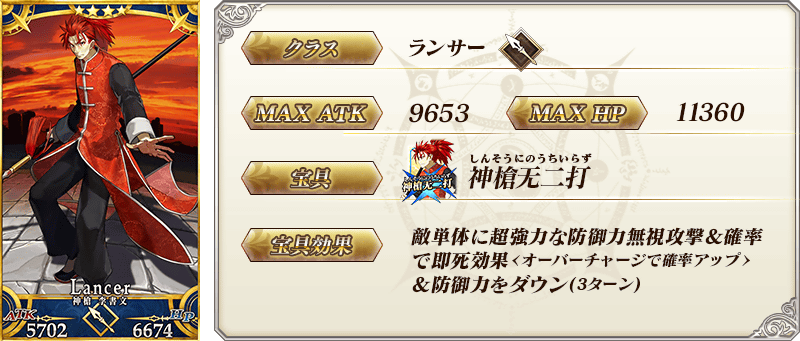
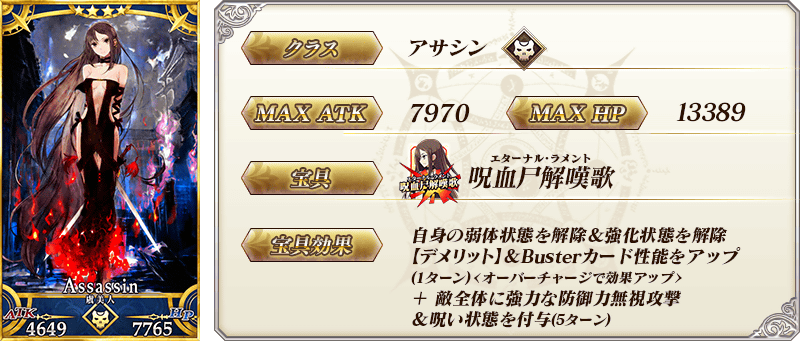
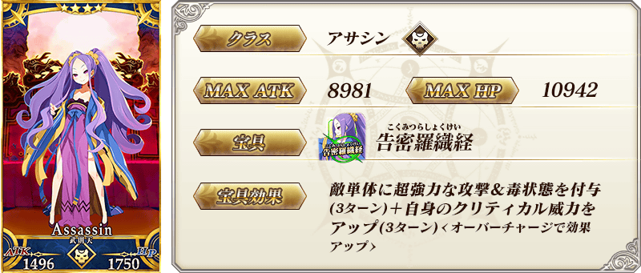
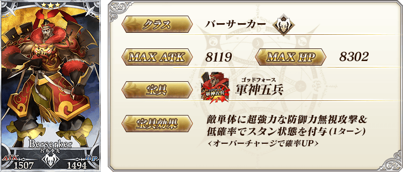
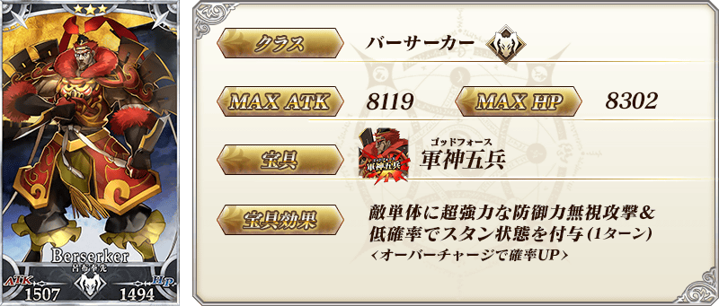
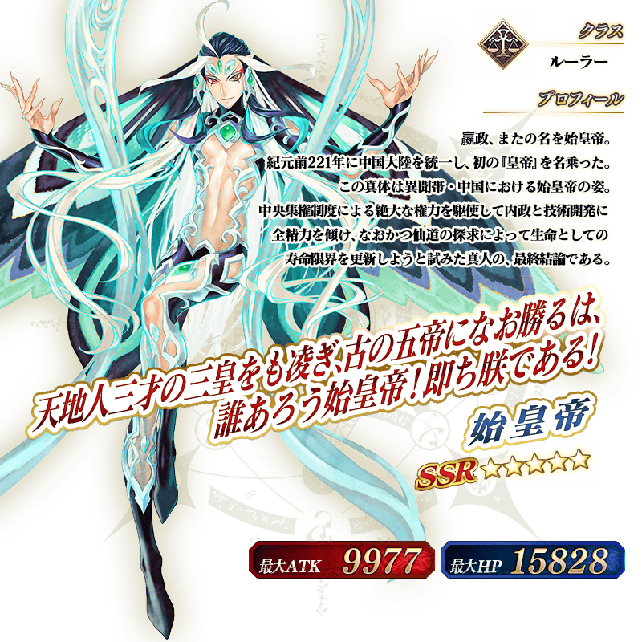

◆「2100萬DL記念Pick Up召喚(每日交替)」期間◆
期間:2020年9月7日(一) 17:00～9月21日(一) 11:59
舉辦期間限定「2100萬DL記念Pick Up召喚(每日交替)」！
為了記念2100萬DL突破，下述的從者以期間限定登場！ ・★5(SSR)始皇帝
包含上述從者，下述的從者常駐Pick Up！ ・★5(SSR)始皇帝 ・★3(R)荊軻 ・★3(R)呂布奉先
另外，下述的從者以每日交替Pick Up！ ・★4(SR)李書文(Lancer) ・★4(SR)虞美人(Assassin) ・★4(SR)武則天(不夜城的Assassin)
Pick Up期間中，Pick Up對象從者的出現機率提升！
詳情請在聖晶石召喚畫面左下的召喚詳細確認。
11次召喚中確定1張★4(SR)以上和確定1位★3(R)以上的從者！ ※確定★4(SR)以上包含從者和概念禮裝。
◆有關從者的注意◆
※請注意本召喚做為每日交替，下述的從者就算舉辦期間中也有不會被抽出來的日子。
・★4(SR)李書文(Lancer)
・★4(SR)虞美人(Assassin)
※下述的從者在Pick Up期間結束後不會追加到故事召喚。
・★5(SSR)始皇帝
※本召喚的Pick Up期間中，透過故事進行所追加的下述從者就算通過各章前也能入手。
・★4(SR)李書文(Lancer)
・★4(SR)虞美人(Assassin)
※下述的從者在Pick Up期間結束後仍會在故事召喚被抽出。
・★4(SR)李書文(Lancer)
・★4(SR)虞美人(Assassin)
・★4(SR)武則天(不夜城的Assassin)
・★3(R)荊軻
・★3(R)呂布奉先
※關於隱藏真名尚未判明的從者，透過主線關卡的進行會讓從者及一部份寶具的名稱變化。
◆有關從者真名的注意◆
在2018年12月31日(二) 23:00以後新配信的主線故事及期間限定活動、一部份關卡、宣傳活動及召喚中，會顯示隱藏真名的對象從者真名。
※2018年12月31日(一) 22:59前已經配信的主線故事、復刻活動、一部份關卡中不在此限。
◆「2100萬DL記念Pick Up召喚(每日交替)」Pick Up內容◆
| Pick Up期間 | Pick Up內容 | |
|---|---|---|
| 全天Pick Up | 每日交替Pick Up | |
| 9/7(一) 17:00～ 9/9(三) 22:59 |
★5 始皇帝 ★3 荊軻 ★3 呂布奉先 |
★4 李書文(Lancer) ★4 虞美人(Assassin) ★4 武則天(不夜城的Assassin) |
| 9/9(三) 23:00～9/10(四) 22:59 | ★4 李書文(Lancer) | |
| 9/10(四) 23:00～9/11(五) 22:59 | ★4 虞美人(Assassin) | |
| 9/11(五) 23:00～9/12(六) 22:59 | ★4 武則天(不夜城的Assassin) | |
| 9/12(六) 23:00～ 9/15(二) 22:59 |
★4 李書文(Lancer) ★4 虞美人(Assassin) ★4 武則天(不夜城的Assassin) |
|
| 9/15(二) 23:00～9/16(三) 22:59 | ★4 李書文(Lancer) | |
| 9/16(三) 23:00～9/17(四) 22:59 | ★4 虞美人(Assassin) | |
| 9/17(四) 23:00～9/18(五) 22:59 | ★4 武則天(不夜城的Assassin) | |
| 9/18(五) 23:00～ 9/21(一) 11:59 |
★4 李書文(Lancer) ★4 虞美人(Assassin) ★4 武則天(不夜城的Assassin) |
|
※請注意會以每日交替變更Pick Up的從者。

 ※上述「★4(SR)李書文(Lancer)」的卡面為靈基再臨第2階段。
 ※上述「★4(SR)虞美人(Assassin)」的卡面為靈基再臨第2階段。

 ※上述「★3(R)荊軻」的卡面為靈基再臨第2階段。
※上述「★3(R)荊軻」的卡面為靈基再臨第2階段。
 


介紹在本召喚Pick Up的4位從者寶具演出！
在「Fate/Grand Order」官方網站內的公告中，以影片公開寶具演出，敬請確認。
【★5(SSR)始皇帝】
【★4(SR)李書文(Lancer)】
【★4(SR)虞美人(Assassin)】
【★4(SR)武則天(不夜城的Assassin)】
其他還有，「2100萬DL突破宣傳活動」同時舉辦！
關於詳情，請自下述橫幅確認。
■「2100萬DL突破宣傳活動」詳細情報